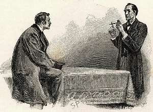

Борис Акунин
Мой календарь
Большой день сегодня - годовщина рождения Шерлока Холмса.
У Конан-Дойля нигде не написано, какого числа сыщик родился, но холмсианцы, они же шерлокианцы путем сложных исчислений, которые я здесь пересказывать не буду, пришли к консенсусу: великий детектив Вильям-Шерлок Скотт Холмс, сын Сайгера и Вайолет Холмс, должен был появиться на свет 6 января 1854 года.
Что самое позитивное в Шерлоке? Что нужно у него позаимствовать в первую очередь?
Наблюдательность и внимание к деталям? Не советую. Тот, кто всё время сосредоточен на мелочах, отвлекается от больших мыслей, ему некогда витать в облаках, а не витать в облаках очень скучно и очень вредно для кармы.
Дедуктивный метод? Это, конечно, штука полезная, но тоже палка о двух концах. Не всегда и не во всем нужно докапываться до сути и устанавливать истинных виновников. А вдруг это кто-то, кого вы любите, кто вам дорог? Оставьте ему (ей) право на индульгенцию, а себе шанс на надежду. Вдруг всё как-нибудь устроится и без вашего расследования?
Вот чему у Холмса точно нужно поучиться, так это девизу «Элементарно, Ватсон». Какая бы запутанная, депрессивная или страшная напасть с вами ни случилась, никогда не капитулируйте перед сложностью. Закуривайте трубку и давайте задание серому веществу (это, правда, уже из лексики Эркюля Пуаро).
Нет настолько сложной задачи, которую нельзя не разложить на компоненты, чтобы спокойно разобраться в каждом, по очереди, а потом снисходительно посмотреть на все эти кубики и сказать: «Elementary, my dear Watson». (Это, кстати, фраза не из Конан-Дойля, а из последующих экранизаций. В первоисточнике сыщик говорит: «It was very superficial, my dear Watson». «Это было весьма поверхностно, мой дорогой Ватсон». Смысл тот же, но звучит, согласитесь, изысканней).